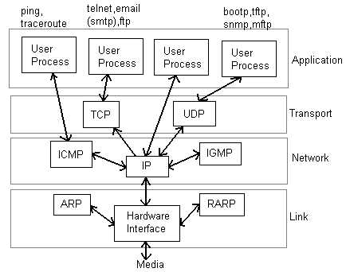
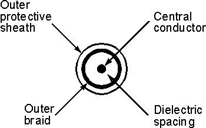
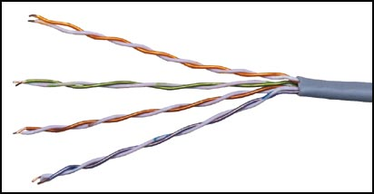
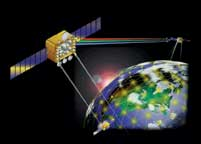

Computer Networks
Prev |
Next |
Index
It deals with the concept of Sessions i.e. when a user logins to a remote server he should be authenticated before getting access to the files and application programs.
Another job of session layer is to establish and maintain sessions. If during the transfer of data
between two machines the session breaks down, it is the session layer which re-establishes the connection. It also ensures that the data transfer
starts from where it breaks keeping it transparent to the end user. e.g. In case of a session with a database server, this layer introduces
check points at various places so that in case the connectoin is broken and reestablished, the transition running on the database is not lost even
if the user has not committed. This activity is called Synchronization. Another function of this layer is Dialogue Control which determines whose turn is it to speak in a session. It is useful in video conferencing.
This layer is concerned with the syntax and semantics of the information transmitted. In order to make it possible for computers with different data representations to communicate data structures to be exchanged can be defined in abstract way alongwith standard encoding.
It also manages these abstract data structres and allows higher level of data structres to be defined an exchange.
It encodes the data in standard agreed way(network format). Suppose there are two machines A and B one follows 'Big Endian' and other 'Little Endian' for data representation. This layer ensures that the data transmitted by one gets converted in the form compatibale to othe machine.
This layer is concerned with the syntax and semantics of the information transmitted.In order to make it possible for computers with different data representations to communicate data structures to be exchanged canbe defined in abstract way alongwith standard encoding.
It also manages these abstract data structres and allows higher level of data structres to be defined an exchange.
Other functions include compression, encryption etc.
The seventh layer contains the application protocols with which the user gains access to the network. The choice of which specific protocols and their associated functions are to be used at the application level is up to the individual user. Thus the boundary between the presentation layer and the application layer represents a separation of the protocols imposed by the network designers from those being selected and implemented by the network users.For example commonly used protocols are HTTP(for web browsing), FTP(for file transfer) etc.
Network Layers as in Practice
In most of the networks today, we do not follow the OSI model of seven layers. What is actually implemented is as
follows. The functionality of Application layer and Presentation layer is merged into one and is called as the
Application Layer. Functionalities of Session Layer is not implemented in most networks today. Also, the Data Link layer
is split theoretically into MAC (Medium Access Control) Layer and LLC (Link Layer Control). But again in
practice, the LLC layer is not implemented by most networks. So as of today, the network architecture is of 5 layers
only.

Network Layers in Internet Today
Some Related Links on OSI Model and TCP Model
Physical Layer
Physical layer is concerned with transmitting raw bits over a communication
channel. The design issues have to do with making sure that when one side
sends a 1 bit, it is recieved by the other side as 1 bit and not as 0 bit.
In physical layer we deal with the communication medium used for transmission.
Types of Medium
Medium can be classified into 2 categories.
- Guided Media : Guided media means that
signals is guided by the prescence of physical media i.e. signals
are under control and remains in the physical wire.
For eg. copper wire.
- Unguided Media : Unguided Media means
that there is no physical path for the signal to propogate. Unguided media
are essentially electro-magnetic waves. There is no control on flow of signal.
For eg. radio waves.
Communication Links
In a nework nodes are connected through links. The communication through
links can be classified as
- Simplex : Communication can take place only in one direction. eg. T.V broadcasting.
- Half-duplex : Communication can take place in one direction at a time. Suppose node A and B are connected then half-duplex communication means that at a time data can flow from A to
B or from B to A but not simultaneously. eg. two persons talking to each other such
that when speaks the other listens and vice versa.
- Full-duplex : Communication can take place simultaneously in both directions. eg. A discussion in a group without discipline.
Links can be further classified as
- Point to Point : In this communication only two nodes are connected to each other. When a node sends a packet then it can be recieved only by the node on the other side and none else.
- Multipoint : It is a kind of sharing communication, in which signal can be recieved by all nodes. This is also
called broadcast.
Generally two kind of problems are associated in transmission of signals.
- Attenuation : When a signal transmitts in a network then the quality of signal degrades as the signal travels
longer distances in the wire. This is called attenuation. To improve quality of signal amplifiers are used at regular distances.
- Noise : In a communication channel many signals transmits simultaneously, certain random signals are also present in the medium. Due to interference of these signals our signal
gets disrupted a bit.
Bandwidth
Bandwidth simply means how many bits can be transmitted per second
in the communication channel. In technical terms it indicates the width
of frequency spectrum.
Transmission Media
Guided Transmission Media
In Guided transmission media generally two kind of materials are used.
- Copper
- Coaxial Cable
- Twisted Pair
- Optical Fiber
- Coaxial Cable:
Coaxial cable consists of an inner conductor and an outer conductor
which are seperated by an insulator. The inner conductor is usually copper. The outer conductor is covered by a plastic jacket. It is named coaxial because the two conductors are coaxial. Typical diameter of coaxial cable lies between 0.4 inch to 1 inch. The most application of coaxial cable is cable T.V. The coaxial cable has high bandwidth, attenuation is less.

- Twisted Pair:
A Twisted pair consists of two insulated copper wires, typically 1mm thick. The wires are twisted togather in a helical form the purpose of twisting is to reduce cross talk interference between several pairs. Twisted Pair is much cheaper then coaxial cable but it is susceptible to noise and electromagnetic interference and attenuation is large.

Twisted Pair can be further classified in two categories:
Unshielded twisted pair: In this no insulation is provided, hence they are susceptible to interference.
Shielded twisted pair: In this a protective thick insulation is provided but shielded twisted pair is expensive
and not commonly used.
The most common application of twisted pair is the telephone system. Nearly all telephones are connected to the telephone company office by a twisted pair. Twisted pair can run several kilometers without amplification, but for longer distances repeaters are needed. Twisted pairs can be used for both analog and digital transmission. The bandwidth depends on the thickness of wire and the distance travelled. Twisted pairs are generally limited in distance, bandwidth and data rate.
- Optical Fiber:
In optical fiber light is used to send data. In general terms prescence of light is taken as bit 1 and its absence as bit 0. Optical fiber consists of inner core of either glass or plastic. Core is surrounded by cladding of the same material but of different refrective index. This cladding is surrounded by a plastic jacket which prevents optical fiber from electromagnetic interferrence and harshy environments. It uses the principle of total internal reflection to transfer data over optical fibers. Optical fiber is much better in bandwidth as compared to copper wire, since there is hardly any attenuation or electromagnetic interference in optical wires. Hence there is less requirement to improve quality of signal, in long distance transmission. Disadvantage of optical fiber is that end points are fairly expensive. (eg. switches)
Differences between different kinds of optical fibers:
- Depending on material
- Made of glass
- Made of plastic.
- Depending on radius
- Thin optical fiber
- Thick optical fiber
- Depending on light source
- LED (for low bandwidth)
- Injection lased diode (for high bandwidth)
Wireless Transmission
- Radio: Radio is a general term that is used for any kind of frequency. But higher frequencies are usually termed as microwave and the lower frequency band comes under radio frequency. There are many application of radio. For eg. cordless keyboard, wireless LAN, wireless ethernet. but it is limited in range to only a few hundred meters. Depending on frequency radio offers different bandwidths.
- Terrestrial microwave: In terrestrial microwave two antennas are used for communication. A focused beam emerges from an antenna and is recieved by the other antenna, provided that antennas should be facing each other with no obstacle in between. For this reason antennas are situated on high towers. Due to curvature of earth terristial microwave can be used for long distance communication with high bandwidth. Telecom department is also using this for long distance communication. An advantage of wireless communication is that it is not required to lay down wires in the city hence no permissions are required.
- Satellite communication: Satellite acts as a switch in sky. On earth VSAT(Very Small Aperture Terminal) are used to transmit and recieve data from satellite. Generally one station on earth transmitts signal to satellite and it is recieved by many stations on earth. Satellite communication is generally used in those places where it is very difficult to obtain line of sight i.e. in highly irregular terristial regions. In terms of noise wireless media is not as good as the wired media. There are frequency band in wireless communication and two stations should not be allowed to transmit simultaneously in a frequency band. The most promising advantage of satellite is broadcasting. If satellites are used for point to point communication then they are expensive as compared to wired media.

References of Images
- http://ai3.asti.dost.gov.ph/sat/levels.jpg
- http://www.ll.mit.edu/Image-Lib/photos/color-Satellite.jpg
- http://oldsite.vislab.usyd.edu.au/photonics/revolution/technology/images/twisted_pair.jpg
- http://www.radio-electronics.com/info/antennas/coax/cross_section_thro_coax.gif
back to top
Prev |
Next |
Index